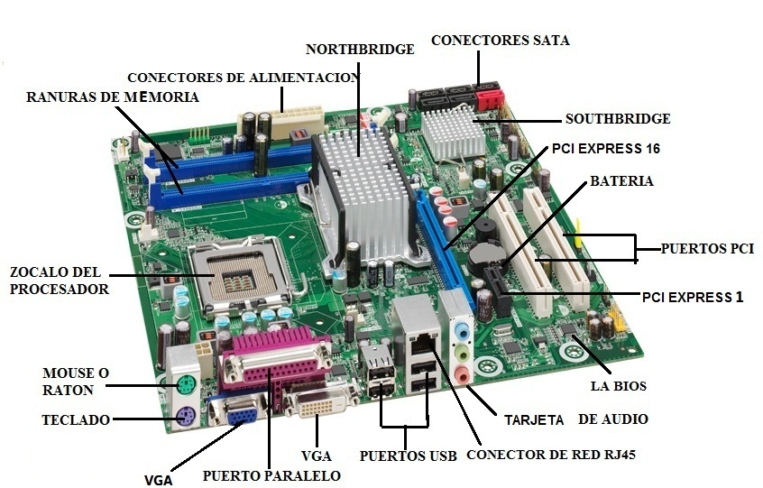
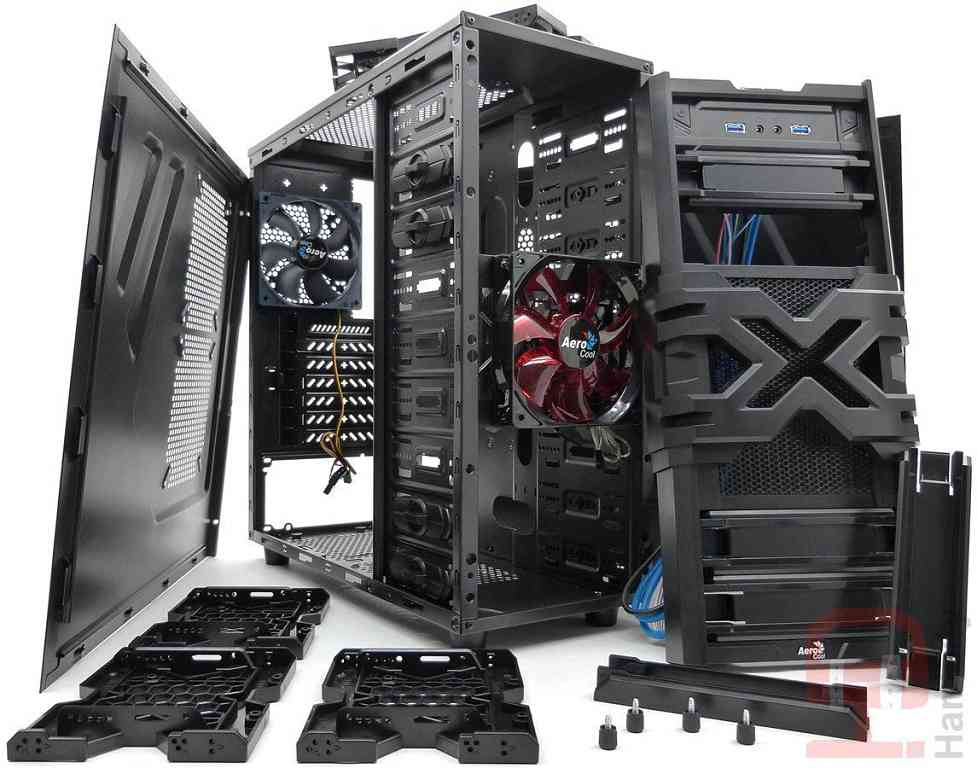
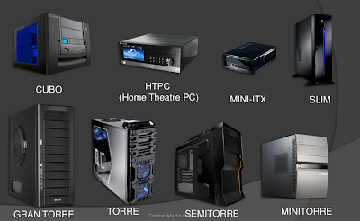
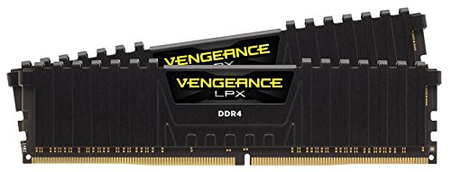

A esto se le reconoce como una computadora personal que tiene un gran equipo de graficos y también un gran sinstema de
procesamiento, rendimiento y velocidad, comunmente con una tarjeta grafica de minimo 2Gb y con velocidades de 1Ghz en adelante. El CPU debe ser de ala demanda por ende se requiere
almenos un prcesado de 4 nucleos en adelante con una velocidad minima de 2Ghz, y todo esto significa unas temperaturas un tanto inestables asi que un buen enfriamento sera indispensable
ya que como bien la tarjeta grafica(GPU) y el CPU necesitan de ello por que cada segundo ejecutan intrucciones de mucho trabajo y mas si se trabaja con sistemas operativos de 64bits.
Durante los años más recientes esta definicion ha ido cambiando, ya que conforme el tiempo avanza su reprecentacion tiende a variar entre
muchos aspectos, si bien este tipo de equipos, computadoras, estan casi cien por ciento diseñadas solo al aspecto *Gaming* también son muy eficaces en la creacion de éstos.
Al presentarse como un objeto de gama alta, debe haber el ¿por qué? pues bien, en esta pagina lo descubriras, presentandote de igual forma los componentes, entre los más fanaticos del tema, más
inovadores y desde el vamos se advierte que si tú estas buscando costearte con una computadora de esta clase de gama, tendras que vender más de un organo para tener la llamada
experiencia gamer; okay, comencemos...
Tarjeta madre:
Ahora bien, comenzamos nuestra odisea con uno de los componentes más importantes en nuestro equipo, las tarjetas madre
en el mercado podemos encontrar una gran cantidad de estas, y es verdad que varia mucho el diseño y la funcionalidad, y al querer adruirir una tendremos que centrarnos en las funciones que
esta nos ofrece y la posiblilidad de hacer un overclock, esto lo explicaremos más delante, la tarjeta madre es el alma de nuestra PC ya que es la encargada de transferir la energía brindada por la
fuente de poder de una manera efectiva, en relacion a los componentes que tengamos. También es en esta misma en la cual colocaremos todos los componentes, las memorias RAM, el procesador,
la tarjeta grafica y el disipador de aire.
Es el pilar de nuestro olimpo, esta constituida por el zocalo del procesador, las ya mencionadas ranuras de memoria, una bateria, la Bios: Es el sistema básico de entrada/salida *Basic Input-Output System*
y ya viene incorporado a la placa base a través de la memoria flash. Es básicamente la encargada del manejo y configuración de la placa base y sus componentes, tarjeta de audio, puertos USB,
entrada VGA, entradas de teclado y raton entre muchas otras cosas.

Aquí tienes algunas de las mejores tarjetas graficas del momento, pero eso si, ten encuenta que la mayoria, por ser de una buena
calidad, y pertenecer a varios lideres en el tema ASUS, MSI y GIGABYTE, tienen precios un tanto elevados, no esperes algo abajo de $2,000.
Gabinetes (Cajas):
El gabinete esta definido como el armazón que mantiene todos los componentes en su lugar, igualmente llamada CPU, en esta colocamos
la parte central, la tarjeta madre y alrrededor de esta los demas aditamentos y aunque no lo parezca es, junto a la fuente de poder, procesador y tarjeta madre, una de las piezas mas inportantes. Y podrás pensar
puedo comprar cualquier coajon ¿No es así? pues... no, no cualquier cajon es compatible con todas las tarjetas madres y tarjetas de video, hay cajones muy espaciosos y otros sumamente pequeños,
En este también estara fijado la fuente de refrigeracion.
/H3>

Hay una gran finidad de cajones, con aspectos distintos e igualmente su estilo pero su clasificacion general son 3 tipos,
los cuales son los más conocidos:
*Torres.
*Semitorres.
*Minitorres.
Los modelos más clasicos, aunque las semitorres son las que se suelen comprar más ya que tiene una considerable cantidad de ranuras de expansion
para discos y tiene un interior amplio para toda clase de componentes y aunque aún hay otros tipos CUBO, HTPC, MINI-ITX, SLIM y GRANTORRE, los primeros tres son los más usados en el hambito gamer, aunque
aveces se suele recurrir a las Grantorre.
Comparación:

Des pués de saber la diferencia y la clasificacion de estos, a continuacion te tengo los que son considerados unos de los
mejores gabinetes de la actualidad, este titulo puede variar enfocandose a lo estetico o simplemente por ser los más usados por personas que dedicas su equipo a juegos "AAA" (Juegos de
muchos requisitos) los primeros tres son en base a su aspecto y los siguientes son los más usados en cuanto al aspecto Gamer:
Tarjetas graficas
Con respecto a este tema, no lo cocaremos a fondo ya que la extencion y los materiales con los cuales estan fabricados
son muy extenso, al igual que las pantallas, pero igualmente importantes, en terminos resumidos las tarjetas graficas son las que se encargan de apoyar a la tarjeta madre en cuanto
a lo grafico, los cuadros por segundos FPS entre otras cosas, sin esta todo el peso del procesamiento grafico recae sobre la ya mencionada tarjeta madre y el procesador, por lo tanto la adquisicion de una
es muy importante, y bien, ahora que estamos hablando del aspecto Gaming es posible disfrutar un gran apartado visual con la tarjetas actuales y nallormente con la:G FORCE RTX 2080.
Antes que nada debemos definir correctamente a la memoria RAM. Para ello,
vamos a basarnos en su nombre que no es otra cosa que las siglas en inglés de la frase Random Access Memory lo que traduce Memoria de Acceso Aleatorio,
es decir, es un tipo de memoria que permite almacenar temporalmente información a una velocidad elevada, permitiendo que el dispositivo computarizado
funcione y realice tareas automatizadas. Dicha información o datos se pierden cuando el equipo ya sea una computadora, portátil, Smartphone o tableta se apaga.
Podemos decir entonces que la memoria RAM es un dispositivo electrónico creado para poder almacenar información de manera temporal y aleatoria.
Estas memorias están integradas por una serie de chips, este conjunto de circuitos están conectados directamente a la placa madre del equipo computarizado.
Ahora que hemos definido correctamente lo que es una memoria RAM, es momento de describir cuál es la función de la memoria RAM en los diferentes dispositivos
computarizados. La respuesta es bastante simple, la función principal de la memoria RAM es cargar información y ejecutar programas de manera temporal y aleatoria,
lo que permite que la computadora, el Smartphone o la tableta funcionen. Mientras más memoria RAM tenga un equipo electrónico, más velocidad de ejecución
de programas y capacidad de trabajo tendrá. Esto se debe a que cuenta con más espacio para almacenar datos temporales y ejecutar secuencias de comandos (programas).
Este en un listado de mas mejores:
Corsair Value Select (DDR3)
HyperX Fury (DDR4)
HyperX HX316C10F/8 (DDR3)
Corsair Vengeance (DDR4)
G. Skill RipJaws V Series (DDR4)

Fuentes de poder:
Una fuente de poder o fuente de alimentación, es un elemento de hardware que está ubicado
dentro del case del CPU. Se trata de un dispositivo que es utilizado para proveer la energía necesaria para el funcionamiento del ordenador, estos dispositivos son
vitales, ya que no sólo alimentan de electricidad a la placa madre, sino que también generan la energía necesaria para que las unidades ópticas, dispositivos USB y
placas de video, audio y red funcionen de manera correcta.
En pocas palabras, podemos decir que la fuente de poder es un pequeño transformador que convierte la corriente eléctrica alterna que viene de la calle
(por lo general 120v o 220v), en un flujo de corriente directa que oscila entre los 9 y los 12 voltios, los cuales, son necesarios para alimentar a la placa madre, pero en el caso gamer esto
cambia, ya que se necesita una funte mucho más potente por la cantidad d componentes que tenemos, con una de 800W estas bien servido, En este aspecto existen marcas,
he aquí una comparacion entre los lideres:
Fuentes AT
Fuentes ATX
=La fuente AT no trae incorporado un conector para la alimentación del microprocesador.
=Tiene un conector de 24 pines para alimentar la placa madre.
=Tiene dos conectores de alimentación de la fuente que son de 6 pines cada uno.
=Las fuentes ATX, al ser más nuevas, no traen el conector de alimentación FLOPPY para las disqueteras 3 ½ pulgadas.
=No se apaga por software sino que en la pantalla del monitor aparece el siguiente mensaje:
“Ahora puede apagar el equipo”. En ese preciso punto la podemos apagar desde el botón de la fuente.
=Las fuentes ATX se apagan por software, es decir, automáticamente.
Una vez que queremos apagar la computadora, cuando ya finalizó el apagado,
la fuente también lo hace automáticamente, no desde un botón como si lo hace la fuente AT.
Fuente de ventilacion:
Ventilador, como también se lo conoce más popularmente,
es uno de los elementos que tienen más importancia dentro de la PC, ya que cumplen con la nada desdeñable tarea de mantener a una
temperatura normal de funcionamiento el gabinete de la misma, y sin ellos lo más probable es que el calor se extienda más allá de los límites
tolerables de los componentes de motherobard, placa de video y demás partes de la computadora.